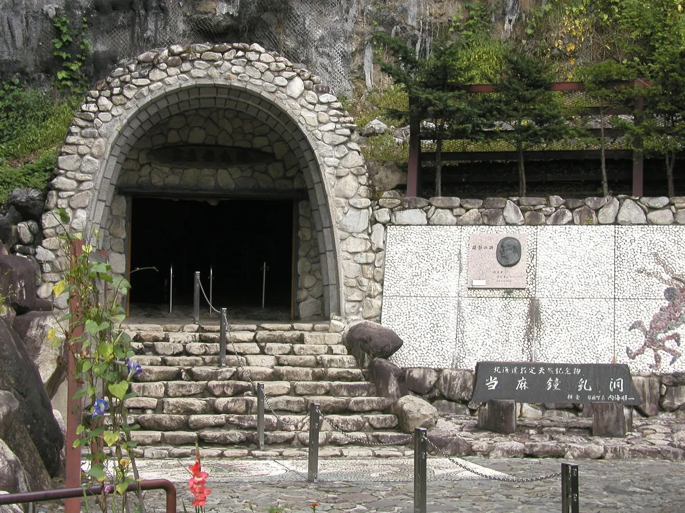
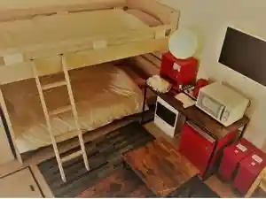
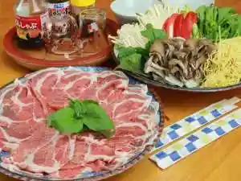
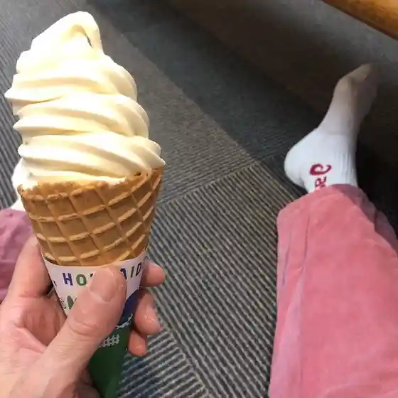
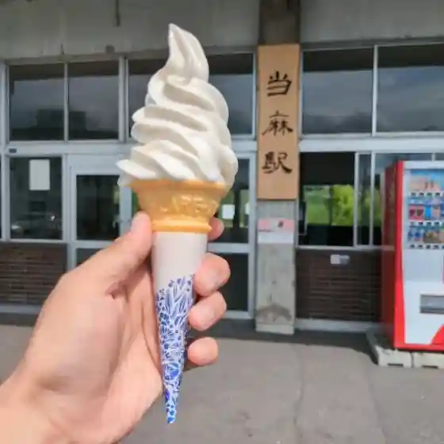
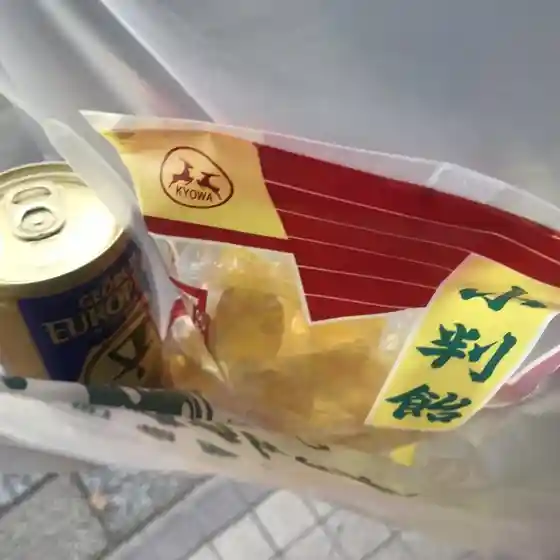
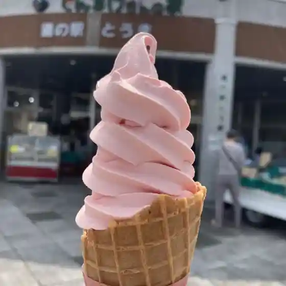
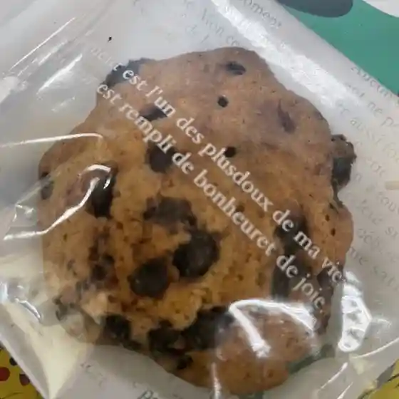
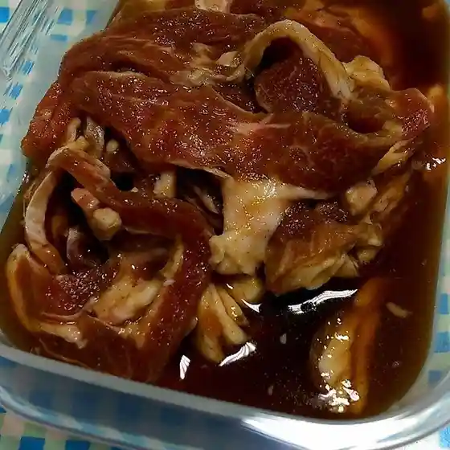

Toma
Toma · Hokkaido
Toma
Highlighted on the Hokkaido map.

Stay
和のみ

Nagono Mi
ギャラリーペンション当麻

Gyarariipenshon Touma
Dining
北の厨房 当麻店

Kita No Chuubou Touma Mise
アグリステーション

Agurisuteeshon
フィールド場ゴルフクラブ オートオアシス店

Fiirudo Ba Gorufukurabu Ootooashisu Mise
道の駅 とうま

Michi No Eki Touma
小鳩

Kobato
花束

Hanataba
Cafe Pine Cone

Cafe Pine Cone
山本精肉店

Yamamoto Seinikuten
いちいの宿
Ichiino Yado
Cafe de Amahoro
Cafe De Amahoro
Puala terrace
Puala Terrace
レ・フゥオン
Re Fuuon
和泉
Izumi
@宇夢
@ U Yume
ブーランジュリー廻りみち@当麻
Buuranjurii Mawari Michi @ Touma
和のみ
Nagono Mi
釣り吉
Tsuri Kichi
カワサキ
Kawasaki
凜香
Rin Kaori
musubi
Musubi
りゅうたくんの家
Ryuutakunno Ie
LAWSON 当麻店
Lawson Touma Mise
養生農園
Youjou Nouen
MERB
Merb